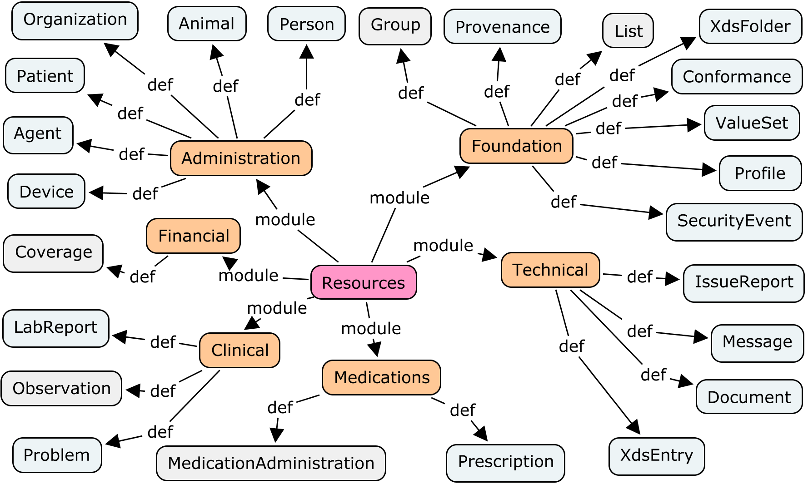
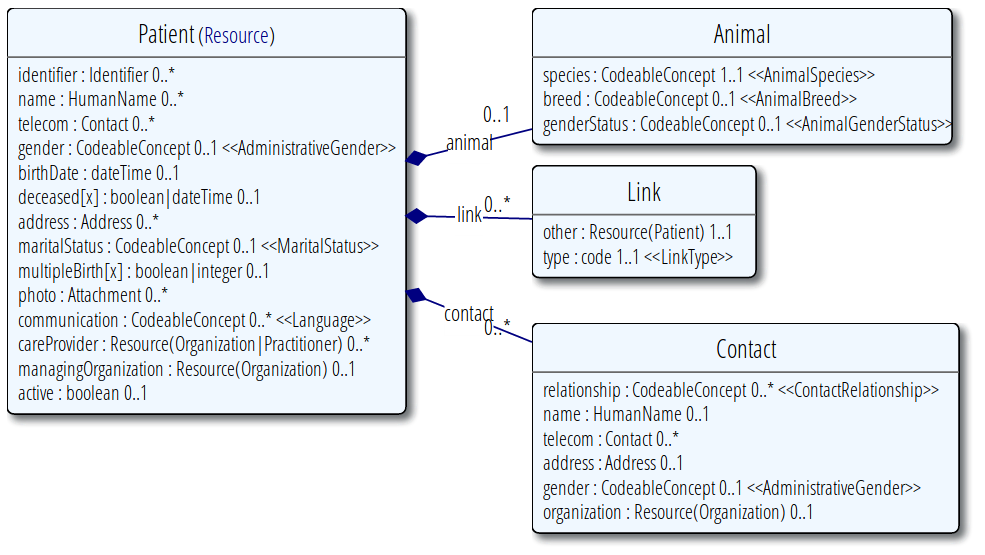

fhirbase
fhirbase
PG as health IT platform
by niquola

health samurai
Nikolay Ryzhikov

Fast Healthcare Interoperability Resources
Implementable: conectathons

Resources ~100 resources

Resource

Fhirbase
Storage for FHIR
polyglot

Fhirbase
Document/Relational storage for FHIR

Development in PG
Modules & Dependencies
Like in JS 6y ago